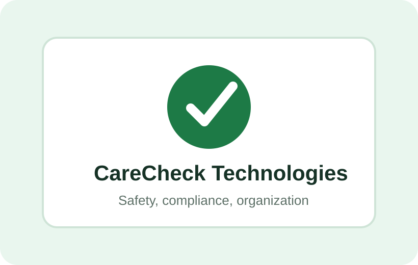

Under Development
Early Access
This CareCheck Technologies™ offering is currently under development and is not yet commercially available. Features, specifications, pricing, and availability may change prior to release.
Founding Partners
This CareCheck Technologies™ offering is currently under development and is not yet commercially available. Features, specifications, pricing, and availability may change prior to release.

This CareCheck Technologies™ offering is currently under development and is not yet commercially available. Features, specifications, pricing, and availability may change prior to release.
This CareCheck Technologies™ offering is currently under development and is not yet commercially available. Features, specifications, pricing, and availability may change prior to release.
This CareCheck Technologies™ offering is currently under development and is not yet commercially available. Features, specifications, pricing, and availability may change prior to release.
CareCheck products and services are designed to support childcare operations and administrative workflows. They do not replace licensing requirements, accreditation standards, active supervision, professional judgment, or regulatory compliance obligations.